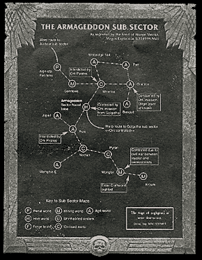

| ||
|
Amidst the wreckage of Ghazghkull's first invasion of Armageddon, a lengthy investigation of the planet's readiness and defences was begun in 948.M41. In light of the strategic value of Armageddon to the Imperium, extensive works were ordered by the Adepts of Terra to secure the Armageddon system against future attacks. Sector Naval command was transferred to the Armageddon system and the Naval facility of St. Jowen's Dock was rebuilt and expanded to accommodate all classes of interstellar warship. Three permanently manned monitor stations were established in the outer reaches, named after three great heroes of the second war of Armageddon; Mannheim, Dante and Yarrick. Ground based and orbital defences were rebuilt and heavily reinforced, minefields were seeded throughout the system and a substantial increase in the numbers of system ships and monitors were ordered.  On Armageddon itself, the long process of rebuilding the hives devastated by Ghazghkull's hordes was begun. A process which, despite massive application of resources and manpower, remained incomplete fifty years later. In part, this was due to the increased number of defence regiments which were raised over this period, despite a lowering of Armageddon's tithe of regiments destined for the Imperial Guard. A military council was appointed to rule over Armageddon, comprising high ranking representatives from the Imperial Guard, Navy, Departmento Munitorium and Adeptus Mechanicus, the Ecclesiarchy and the Governor of each of the major hives on Armageddon.
|
. |
The council was headed by General Kurov of the Imperial Guard, a respected veteran of the Bakkus Crusade. From 949.M41 to 978.M41, General Kurov coordinated a series of xenocidal campaigns conducted throughout the equatorial jungles between Armageddon Primus and Secundus and the ice-bound world of Chosin to eliminate Ork infestations which sprang up in the aftermath of Ghazghkull's invasion. Fifty years passed and Armageddon rose from the ashes, its defences stronger and more powerful than they had ever been before. Still it was not enough. The first signs of the coming storm was a series of attacks on systems surrounding Armageddon and other worlds nearby. First the nearby world of Minerva suffered the depredations of Ork pirates, then the Agri-world of Ruis was likewise assailed. Over a period of months, in spite of the best efforts of the Imperial Navy, the number of merchant ships reaching Armageddon was cut by half. It was as though an unseen presence knew that the Imperial forces were bound by the need to guard the Armageddon system and were not free to patrol the sector as freely as they should. Almost overnight, the pirate raids grew into assaults on outposts and then into attacks against lightly-held colonies and satellites. Soon, the first full-scale planetary invasions began. Two dozen Imperial worlds came under attack in as many hours and the Astropaths of Armageddon received constant reports of yet more Ork assaults. Every consultation of the Emperor's Tarot showed bloodshed, destruction and the sign of the Beast Resurgent. Rumours spread that Ghazghkull was returning to wreak his vengeance, and soon even the most obstinate bureaucrat could no longer deny that an Ork Waaagh! of gargantuan proportions was engulfing the Armageddon sector. After Task Force Trajan was presumed lost battling Orks in the Desdena system, General Kurov sent forth a call to nearby Imperial Guard regiments and Space Marine Chapters to muster in defence of Armageddon.
|